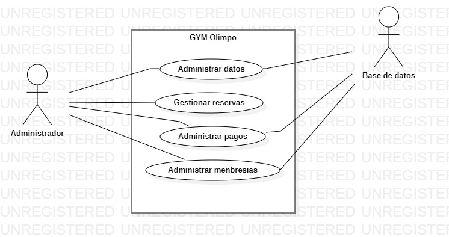
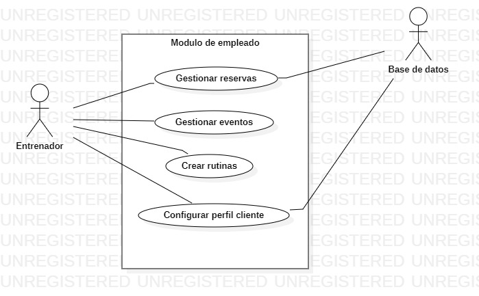
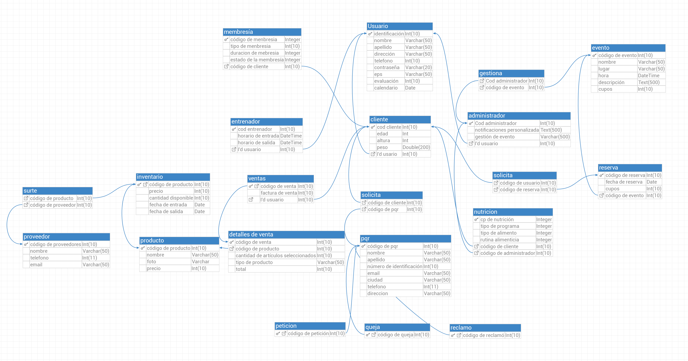

SERVICIO NACIONAL DE APRENDIZAJE
(Centro Industrial y de Aviación)
MANUAL TÉCNICO
Tabla de contenido
- Alcance
- Descripción de Procesos
- Diagramas UML
- Diagrama de Casos de Usos
- Diagrama de Actividades
- Diagrama de Clase
- Descripción de la plataforma
- Modelo Relacional de la Base de datos
- Diccionario de datos
- Documentación código fuente
- Descripción de acuerdos de niveles de servicios (ANS)
- Requerimiento
- Incidente
- Tiempo de respuesta
- Tiempo de solución
Alcance
El alcance de este sistema de información será la creación de un aplicativo
web que permitirá al gimnasio llevar un control total de la información de
sus clientes y las ventas de sus productos, ingresos de mensualidades e inscripciones.
Además, este sistema dará apoyo a los procesos de: publicidad, usuarios, login.
Descripción de Procesos
El administrador será el encargado de gestionar y administrar los datos,
pagos, reservas y membresías de los clientes.
El entrenador será el encargado de crear y gestionar reservas , eventos y rutinas.
También se encargará de configurar el perfil del cliente, es decir, que gestionará
Diagramas UML
Diagrama de Casos de Usos

Diagrama de Clase

Modelo Relacional de la Base de datos
Diccionario de datos
Documentación código fuente
Descripción de acuerdos de niveles de servicios (ANS)
Requerimientos
Estos son los requisitos mínimos para ejecutar la aplicación.
REQUISITOS MÍNIMOS:
- Sistema Operativo: Windows 7,8
- Procesador: Intel Core
- Servidor: apache Tomcat
- Memoria RAM: 4GB
- Disco Duro: 4GB
- Resolución de pantalla: 1280 x 720 píxeles
- Periféricos: Teclado, ratón (Opcional)
Tiempo de respuesta:
El tiempo de respuesta será dependiendo del nivel de riesgo que tenga la página:
-Si el nivel de riesgo en alto la respuesta será inmediata.
-Si el nivel de riesgo es medio el tiempo de respuesta será dentro de 4 horas.
-Si el nivel de riesgo es bajo el tiempo de respuesta será dentro de 8 horas.
Tiempo de solución:
El tiempo de solución dependerá de qué tan grave sea el daño:
-El tiempo de solución para el nivel de riesgo alto es de 5 a 8 horas.
-El tiempo de solución para el nivel medio es de 3 a 4 horas.
-El tiempo de solución par el nivel bajo es de 1 a 2 horas.